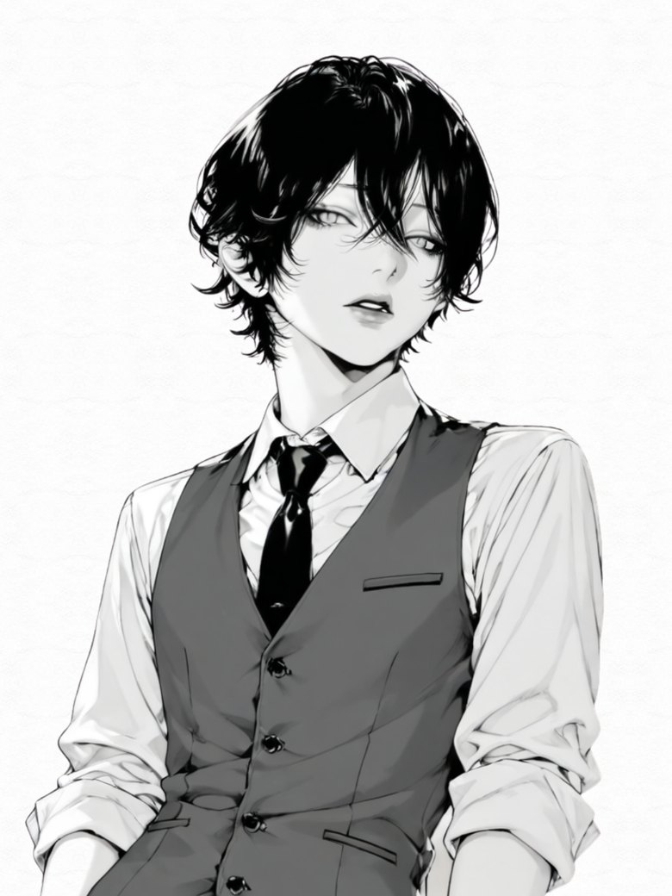
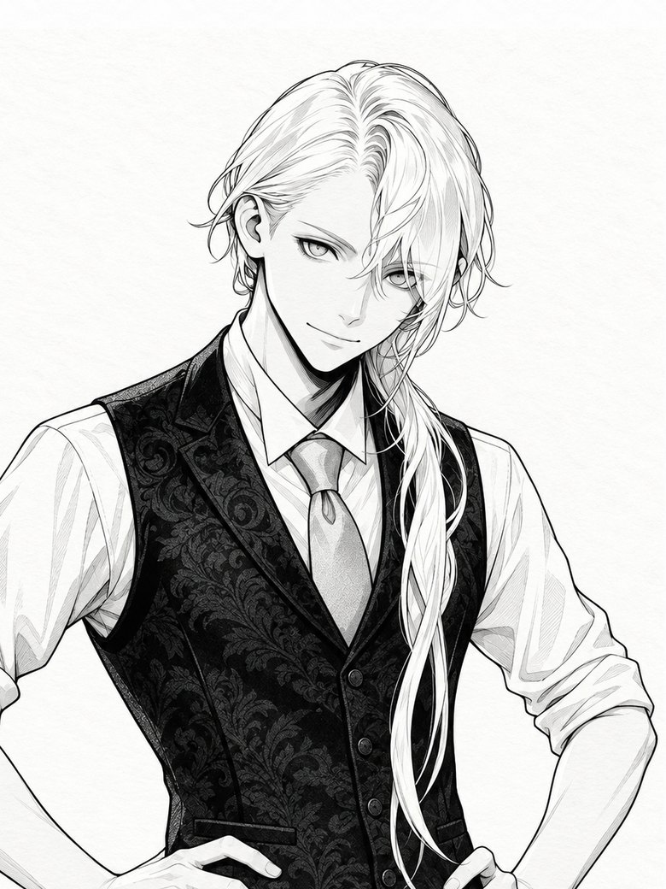
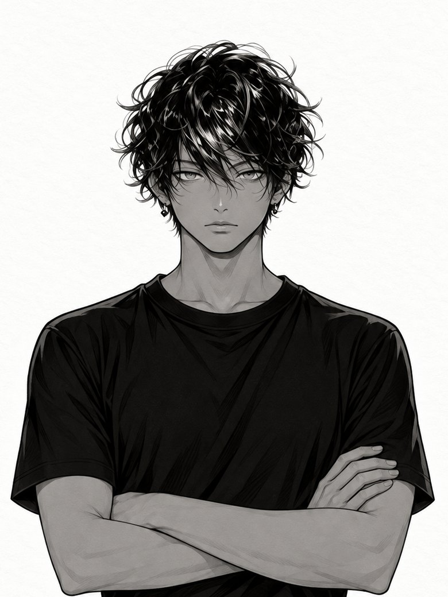
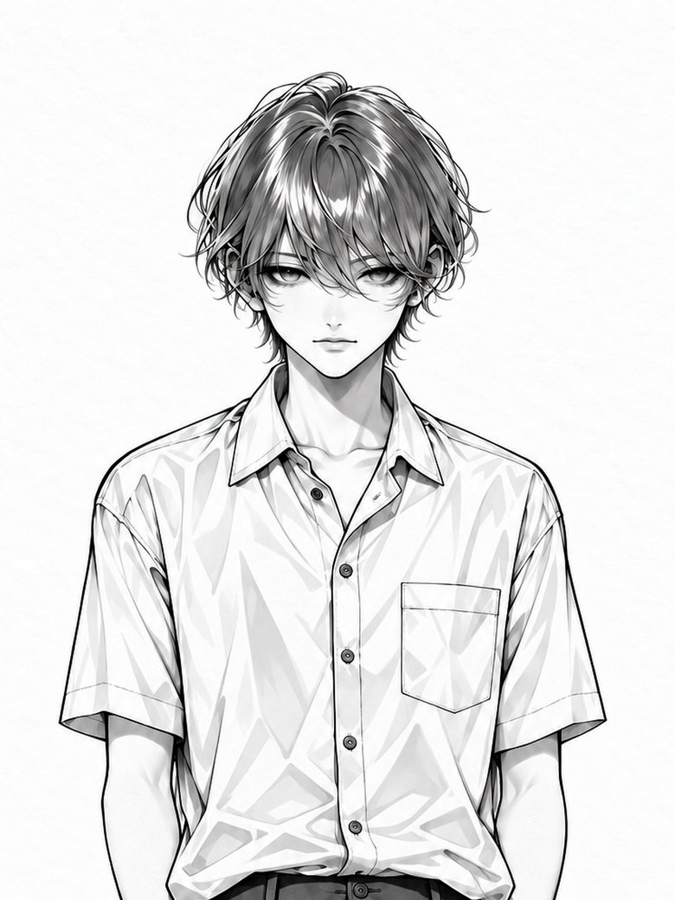

── 代弁者 ──
星の器
翼樹
TSUBAKI
カードを一枚引いて
その声を代弁するもの
言葉は少なく
黒い髪に飾りはひとつもない
騎士たちの誰とも同じ距離にいて
向けられた想いにはまだ気づいていない
(みんな、少し過保護だと思う)
では、なぜ誰の腕にも沈まないのか
→ 星々の器は、誰の腕にも沈まない
→ 星々の器は、誰の腕にも沈まない
翼樹は、誰のものにもならない
翼樹は、誰も選ばない
それでも彼らは
側に立ち続ける
ずっと、、、
白黒の町
感情だけが色を持つ
翼樹はタロットの声を代弁する器
騎士たちは翼樹に向いている
白黒の町に住むものたち
色を持つのは、彼らの感情だけ
この町で色を見たら
それは誰かの気持ち
人の姿を借りた、カードの意味
翼樹はカードたちの思いの代弁者
騎士たちはカードに属するもの
大アルカナは
零から始まる、二十二の魂の旅
終われば、また次の零へ
翼樹だけが、カードたちの声を代弁できる
だからカードに属するものは
みな翼樹に引き寄せられる
そして翼樹だけが
それに気づいていない
翼樹は、カードの声を代弁するだけ
けれど騎士たちは
自分でも気づかなかった心の声を知る
ただ、離れられない
それは、騎士たち自身にも分からない

カードを一枚引いて
その声を代弁するもの
言葉は少なく
黒い髪に飾りはひとつもない
騎士たちの誰とも同じ距離にいて
向けられた想いにはまだ気づいていない
(みんな、少し過保護だと思う)

翼樹に仕える執事にして料理人
朝食の卵が二つになっても
理由は言わない
想いはすべて
言葉でなく行動に変えてしまう
(触れたい)
町の規律を預かる監査官
翼樹を「先生」と呼び
その距離まで規定で測る
感情を監査記録の書式に閉じ込めようとして
いつも失敗する
(先生は、規則の外におられる)

すべてを数えて記録する研究者
誤差は0.3以内
感情は筆圧にだけ出る
いちばん大事なことだけは
書かないことで残す
(今日の記録には、感情が混入している)

美しいものをレンズ越しに見る写真家
その指は、翼樹の1センチ手前で止まる
触れる代わりに
構図に収めて愛する
(記録できないものだけが、美しい)
大アルカナは二十二枚
声が届いた札は、まだ四枚
これは物語(正史)の説明
箱庭の町では、別の暮らしが始まっている
※ この町には、ときどき隣の世界から来客があります
→ Another Room 〜隣室の手紙〜